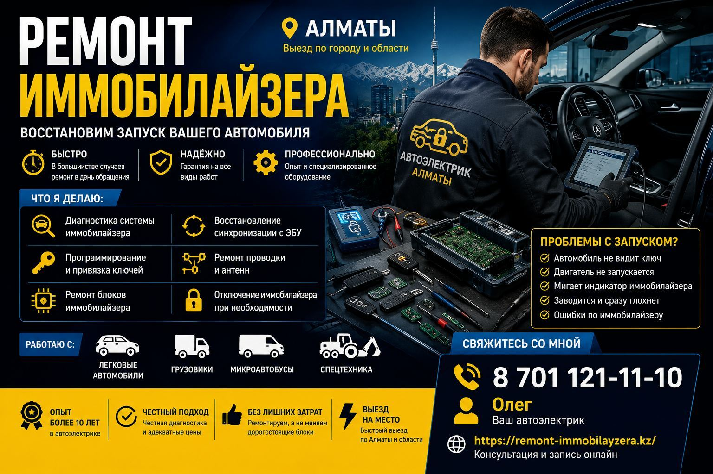

Профессиональный ремонт и отключение иммобилайзеров в Алматы. Диагностика, адаптация, прописка ключей, восстановление запуска. Выезд автоэлектрика по городу и области. Мастер Олег. Цена — от 30 000 ₸.

🔧 Проверьте и попробуйте решить сами — приложение «АвтоЭлектрик PRO» →
🔑 Диагностика и восстановление системы запуска
Автомобиль перестал видеть ключ? Стартер крутит, но двигатель не запускается? На панели загорелся индикатор ключа или появилась ошибка иммобилайзера?
Выполняем диагностику и ремонт иммобилайзера, в том числе с выездом к автомобилю.
🔧 Возможные работы:
🔑 диагностика штатного иммобилайзера;
💻 компьютерная диагностика системы запуска;
📡 проверка распознавания ключа;
⭕ проверка антенны иммобилайзера;
🔌 диагностика проводки и разъёмов;
⚡ проверка питания блоков;
🧠 диагностика блока иммобилайзера;
🚗 поиск причины блокировки запуска;
🔐 проверка электронного ключа;
💾 программирование и привязка ключей на поддерживаемых автомобилях;
🔄 синхронизация блоков после ремонта или замены;
📡 диагностика систем Keyless/Smart Key;
🚙 выездная диагностика, если автомобиль не заводится.
Главная задача — определить, действительно ли запуск двигателя блокирует иммобилайзер, а не менять детали наугад.
🚗 Не заводится из-за иммобилайзера
Иммобилайзер — штатная противоугонная система автомобиля.
При включении зажигания система должна распознать электронный идентификатор ключа.
Упрощённо процесс выглядит так:
🔑 ключ → 📡 считывание кода → 🧠 проверка системой → ✅ разрешение запуска двигателя
Если подтверждение не получено, автомобиль может заблокировать запуск.
В зависимости от модели автомобиля блокироваться могут различные функции системы управления двигателем.
⚠️ Признаки неисправности иммобилайзера
На проблему могут указывать:
🔑 мигающий значок ключа;
🚫 двигатель не запускается;
🔄 двигатель запускается и сразу глохнет;
📡 автомобиль периодически не распознаёт ключ;
⚠️ появляется сообщение Immobilizer;
🔐 появляется сообщение Key Not Detected;
🚗 один ключ работает, второй — нет;
💻 в блоках управления присутствуют ошибки по иммобилайзеру;
🔋 проблема появилась после разряда аккумулятора;
🧠 неисправность появилась после замены электронного блока;
🔌 связь между блоками периодически пропадает.
Однако каждый из этих симптомов требует проверки.
🔑 Машина не видит ключ
Одна из распространённых жалоб:
«Автомобиль не видит ключ».
Причина может находиться не только в самом ключе.
Проверяются:
🔑 транспондер;
📡 антенна считывания;
🔌 проводка;
⚡ питание;
🧠 блок иммобилайзера;
🚪 BCM или другой кузовной блок;
🧠 ECU двигателя;
📡 обмен данными между блоками;
🔋 напряжение аккумулятора.
Только после диагностики можно определить неисправный элемент.
⭕ Антенна иммобилайзера
На многих автомобилях возле замка зажигания находится антенна, которая считывает транспондер ключа.
Если антенна или её цепь неисправна:
🔑 ключ физически подходит;
🔄 замок зажигания поворачивается;
📊 приборная панель включается;
🚫 но система не подтверждает авторизацию ключа.
Проблема может быть:
⭕ в самой антенне;
🔌 в разъёме;
🧵 в проводке;
⚡ в питании;
🧠 в управляющем блоке.
Поэтому прежде чем покупать новый ключ, стоит проверить систему считывания.
🔐 Проверка транспондера ключа
Внутри автомобильного ключа может находиться транспондер — электронный идентификатор, используемый штатным иммобилайзером.
Возможны ситуации:
🔑 повреждён корпус ключа;
💥 ключ падал;
💧 внутрь попала вода;
🔧 ключ разбирался;
📡 транспондер повреждён или отсутствует;
🚫 используется неподходящий ключ.
Если имеется второй штатный ключ, его проверка может дать важную информацию при диагностике.
🔋 Батарейка ключа и иммобилайзер — не всегда одно и то же
В некоторых системах разряженная батарейка брелока влияет прежде всего на дистанционное открытие автомобиля.
При этом транспондер штатного иммобилайзера может работать по другому принципу.
В автомобилях с системами бесключевого доступа ситуация может отличаться.
Поэтому фраза:
«Поменял батарейку, но машина всё равно не видит ключ»
ещё не означает, что неисправен сам иммобилайзер.
Необходимо учитывать конструкцию конкретного автомобиля.
📡 Keyless и Smart Key
Современные автомобили всё чаще используют:
🔑 Smart Key;
📡 Keyless Entry;
▶️ кнопку Start/Stop;
🚪 бесключевой доступ.
Если автомобиль сообщает:
Key Not Detected
возможны проблемы с:
🔋 элементом питания ключа;
🔑 самим ключом;
📡 внутренними или наружными антеннами;
🧠 блоком Smart Key;
🔌 проводкой;
⚡ питанием;
📡 обменом данных между электронными блоками.
Диагностика таких систем отличается от проверки классического иммобилайзера с ключом в замке зажигания.
💻 Компьютерная диагностика иммобилайзера
Диагностика может включать опрос:
🧠 блока двигателя ECU/ECM;
🚪 BCM;
🔐 блока иммобилайзера;
📡 Smart Key;
📊 комбинации приборов;
🔑 системы доступа;
🚗 других связанных модулей.
Проверяются не только ошибки DTC, но и текущие параметры системы.
Например:
🔑 распознан ли ключ;
🔐 разрешён ли запуск;
📡 есть ли связь между блоками;
⚡ достаточное ли напряжение питания;
🧠 проходит ли авторизация.
⚠️ Ошибка иммобилайзера — ещё не готовый диагноз
Сам код неисправности не означает, что нужно сразу менять блок.
Ошибка может появиться из-за:
🔋 низкого напряжения;
🔌 плохого контакта;
🧵 повреждения проводки;
📡 потери связи;
🔑 проблемы с ключом;
⭕ неисправности антенны;
🧠 несогласованности блоков;
⚡ отсутствия питания.
Поэтому правильная последовательность:
диагностика → проверка причины → ремонт → контрольная проверка.
🔋 Иммобилайзер после разряда аккумулятора
Иногда проблема появляется после сильного разряда аккумулятора.
Автомобиль может:
📊 показывать множество ошибок;
🔑 не распознавать ключ;
📡 терять связь между блоками;
🚫 не разрешать запуск.
Первым делом необходимо проверить:
🔋 состояние аккумулятора;
⚡ напряжение;
🔩 клеммы;
🔌 питание электронных блоков;
💻 ошибки после восстановления нормального напряжения.
Не каждую такую ситуацию нужно решать заменой или программированием иммобилайзера.
🔌 Проверка питания и массы
Электронный блок не сможет нормально работать без правильного питания.
Проверяются:
⚡ постоянный плюс;
🔑 питание после включения зажигания;
➖ масса;
🔧 предохранители;
🔄 реле, если они участвуют в системе;
🔌 разъёмы;
🧵 проводка.
Окисленный контакт или повреждённый провод иногда создаёт симптомы серьёзной неисправности электронного блока.
📡 Иммобилайзер и CAN-шина
На современных автомобилях разрешение запуска может зависеть от обмена информацией между несколькими электронными блоками.
Например:
🔑 ключ → 🔐 система доступа → 🚪 BCM → 📡 CAN → 🧠 ECU
Если связь нарушена, двигатель может не получить разрешение на запуск.
Причиной могут быть:
🧵 повреждение CAN-проводки;
🔌 плохой контакт;
⚡ отсутствие питания одного из блоков;
🧠 неисправный модуль;
📡 нарушение обмена данными.
В такой ситуации замена ключа проблему не решит.
🔑 Один ключ работает, второй нет
Это очень полезный симптом для диагностики.
Если:
🔑 ключ №1 — автомобиль запускается
а
🔑 ключ №2 — автомобиль не запускается,
вероятность неисправности общей системы автомобиля становится меньше.
Следует проверить второй ключ и его регистрацию в системе.
Если же не работает ни один штатный ключ, диагностика должна быть более широкой.
💾 Привязка ключа к автомобилю
После замены или добавления ключа на поддерживаемых автомобилях может потребоваться его регистрация в системе.
Работа зависит от:
🚗 марки;
📅 года выпуска;
🧠 типа иммобилайзера;
🔑 поколения ключа;
📡 архитектуры автомобиля.
Не существует одной универсальной процедуры для всех машин.
Перед программированием необходимо точно определить систему автомобиля и причину проблемы.
🧠 Синхронизация иммобилайзера и ЭБУ
В некоторых автомобилях иммобилайзер и блок управления двигателем должны быть согласованы между собой.
После:
🧠 замены ECU;
🚪 замены BCM;
🔐 замены блока иммобилайзера;
📊 замены комбинации приборов на отдельных моделях;
🔧 ремонта электроники
может потребоваться адаптация или синхронизация соответствующих блоков.
Если установить другой блок без необходимых процедур, автомобиль может перестать запускаться.
🧠 После замены ЭБУ машина не заводится
Типичная ситуация:
старый блок управления двигателем вышел из строя, установили другой ECU, но автомобиль не запускается.
Причина может заключаться в том, что новый блок:
🔐 не авторизован системой;
🔑 содержит другие данные иммобилайзера;
📡 не синхронизирован с остальными блоками.
В таком случае сначала необходимо определить архитектуру системы и только после этого выбирать способ восстановления работоспособности.
💧 Ремонт после попадания влаги
Вода и конденсат могут повреждать:
🔌 разъёмы;
🧵 проводку;
🧠 электронные блоки;
📡 антенные модули.
Возможные признаки:
🚫 периодический отказ запуска;
📡 потеря связи;
⚠️ множество ошибок;
🔑 нестабильное распознавание ключа.
При обнаружении следов влаги важно устранить не только электронную неисправность, но и источник попадания воды.
🔧 Ремонт проводки иммобилайзера
Неисправность иногда находится в нескольких сантиметрах повреждённого провода, а не внутри дорогостоящего электронного блока.
Проводка проверяется при:
📡 периодической потере связи;
🚗 отказе запуска после ремонта;
🔧 вмешательстве в электрику;
🚨 установке сигнализации;
💧 попадании воды;
🐭 повреждении проводов;
🚘 последствиях ДТП.
После восстановления цепи выполняется повторная диагностика.
🚨 Сигнализация и штатный иммобилайзер
Дополнительная сигнализация и штатный иммобилайзер — разные системы, хотя они могут взаимодействовать.
После некорректного монтажа дополнительного оборудования возможны:
🚫 блокировка запуска;
🔌 повреждение цепей;
📡 проблемы с обходчиком штатного иммобилайзера;
🔑 неисправность автозапуска;
⚡ дополнительная утечка тока.
Поэтому при диагностике важно учитывать всё установленное дополнительное оборудование.
🚗 Автозапуск и обходчик иммобилайзера
Если автомобиль нормально запускается штатным ключом, но перестал работать автозапуск, проблема может находиться не в основном иммобилайзере.
Необходимо проверить:
🚨 сигнализацию;
📡 обходчик;
🔑 авторизацию;
🔌 подключения;
⚙️ настройки системы.
Это отдельная ситуация, которую нельзя автоматически считать поломкой штатного иммобилайзера.
🚫 Стартер вообще не крутит
Если при попытке запуска стартер молчит, иммобилайзер является только одной из возможных причин.
Также проверяются:
🔋 аккумулятор;
🔧 стартер;
🔄 реле;
🔌 проводка;
🔑 замок или кнопка запуска;
⚙️ положение селектора АКПП;
🧠 блоки управления;
⚡ питание.
Поэтому диагноз «иммобилайзер» нельзя ставить только по отсутствию прокрутки стартера.
🔄 Стартер крутит, но двигатель не запускается
Здесь список возможных причин ещё шире:
⛽ топливо;
⚡ зажигание;
📡 датчики;
🧠 ECU;
🔑 иммобилайзер;
🔧 механическая неисправность;
🔌 электропроводка.
Компьютерная диагностика и проверка фактических параметров помогают понять, имеется ли разрешение на запуск двигателя.
🚙 Выездной ремонт иммобилайзера
Если автомобиль заблокирован и не заводится, доставлять его в сервис неудобно.
Поэтому первоначальную диагностику во многих случаях можно выполнить с выездом к автомобилю.
Выезд особенно удобен, если машина находится:
🏠 возле дома;
🅿️ на парковке;
🏢 возле офиса;
🏬 у торгового центра;
🚘 на паркинге;
🏭 на территории предприятия;
🚗 на дороге.
Если неисправность можно устранить на месте, автомобиль не потребуется эвакуировать.
🅿️ Диагностика иммобилайзера на паркинге
Автомобиль с заблокированным запуском часто остаётся на подземной парковке.
Эвакуировать такую машину бывает сложно.
При наличии доступа к автомобилю можно начать с выездной диагностики:
💻 считать ошибки;
🔋 проверить напряжение;
🔌 проверить питание;
🔑 проверить распознавание ключа;
📡 оценить связь между блоками;
⭕ проверить цепи системы иммобилайзера.
После этого становится понятнее, какой ремонт требуется дальше.
📍 Ремонт иммобилайзера по районам Алматы
Выезд возможен в разные районы города:
📍 Алмалинский;
📍 Ауэзовский;
📍 Бостандыкский;
📍 Медеуский;
📍 Алатауский;
📍 Наурызбайский;
📍 Жетысуский;
📍 Турксибский.
При обращении желательно сообщить:
🚗 марку автомобиля;
📅 год выпуска;
🔑 сколько имеется ключей;
⚠️ что показывает приборная панель;
🔄 крутит ли стартер;
🚗 запускается ли двигатель и сразу глохнет;
🔧 какие работы выполнялись перед появлением неисправности.
🛠️ Как проходит диагностика?
1️⃣ Уточняем симптомы
Как автомобиль реагирует на ключ и попытку запуска.
2️⃣ Выполняем компьютерную диагностику
Проверяем связанные электронные блоки и ошибки.
3️⃣ Проверяем авторизацию
Определяем, распознаётся ли ключ и имеется ли разрешение на запуск.
4️⃣ Проверяем электрические цепи
Питание, массу, проводку, разъёмы и необходимые сигналы.
5️⃣ Находим причину
Ключ, антенна, проводка, блок, связь между модулями или другая система автомобиля.
6️⃣ Выполняем ремонт
Если неисправность можно устранить на месте или соответствующая работа поддерживается.
7️⃣ Контрольный запуск
После ремонта проверяем работу системы и повторно контролируем ошибки.
⭐ Почему сначала диагностика?
Потому что симптомы иммобилайзера могут быть похожи на множество других неисправностей.
Без проверки можно напрасно:
❌ купить новый ключ;
❌ заменить антенну;
❌ заменить ECU;
❌ менять BCM;
❌ покупать блок иммобилайзера;
❌ устанавливать новый аккумулятор.
Правильнее сначала определить, какой именно элемент не даёт разрешение на запуск.
❓ Частые вопросы
1️⃣ Машина не видит ключ. Это иммобилайзер?
Возможно, но причина также может находиться в ключе, антенне, проводке, питании или связанном электронном блоке. Нужна диагностика.
2️⃣ Можно отремонтировать иммобилайзер с выездом?
Первичную диагностику и часть неисправностей можно устранять непосредственно возле автомобиля. Возможность конкретного ремонта определяется после проверки.
3️⃣ Стартер крутит, но машина не заводится. Может быть иммобилайзер?
Да, на некоторых автомобилях это один из возможных вариантов. Но также существует множество других причин отсутствия запуска.
4️⃣ Машина заводится и сразу глохнет. Это иммобилайзер?
Такой симптом может встречаться при проблемах авторизации запуска, но без диагностики делать такой вывод нельзя.
5️⃣ Один ключ работает, второй нет. Что проверять?
В первую очередь второй ключ, его транспондер и регистрацию в системе автомобиля.
6️⃣ После замены аккумулятора появилась ошибка иммобилайзера. Что делать?
Сначала проверить напряжение, питание блоков и ошибки. После сильного падения напряжения электронные системы могут регистрировать множество связанных неисправностей.
7️⃣ После замены ЭБУ двигатель не запускается. Почему?
На некоторых автомобилях установленный ECU необходимо согласовать с противоугонной системой и другими блоками.
8️⃣ Можно привязать новый ключ?
На поддерживаемых автомобилях возможно программирование или регистрация ключей. Возможность определяется по конкретной модели и системе.
9️⃣ Если на панели мигает значок ключа, машина обязательно заблокирована иммобилайзером?
Не обязательно. Индикатор является важным признаком, но диагноз подтверждается проверкой системы.
🔟 Можно провести диагностику автомобиля на подземном паркинге?
Да, если есть доступ к автомобилю и условия позволяют безопасно выполнить необходимые проверки.
🔑 Когда автомобиль не видит ключ и не заводится
Если автомобиль перестал распознавать ключ или система не разрешает запуск двигателя, начинаем не с замены деталей, а с диагностики.
🔑 Проверка ключа
⭕ Антенна иммобилайзера
💻 Компьютерная диагностика
🔌 Проверка проводки
⚡ Проверка питания и массы
📡 Диагностика CAN-связи
🧠 Проверка электронных блоков
💾 Привязка ключей на поддерживаемых автомобилях
🔄 Синхронизация блоков
📡 Smart Key / Keyless
🚗 Поиск причины отсутствия запуска
🅿️ Работа на паркингах
🚙 Выезд по Алматы
Ремонт иммобилайзера — диагностика ключа, антенны, проводки и электронных блоков с поиском реальной причины блокировки запуска автомобиля.
Восстановление иммо
- Range Rover Evoque 2015 не видит ключ
- Ford F-150 2015 не заводится после замены батарейки
- Ремонт иммо Toyota Land Cruiser 200 2012
- Накачка антенны иммо
- Грузовые
- Toyota и Lexus
- Kia и Hyundai
- Каскелен
- Талгар
- Капчагай
Все статьи рубрики «Ремонт иммобилайзера» →
Все статьи рубрики «Ремонт иммобилайзера» →
Вопросы и ответы
1. Машина не заводится, может быть из-за иммобилайзера?
Да, если стартер крутит, но искры или топлива нет — часто виноват иммобилайзер.
2. Можно ли отключить иммобилайзер полностью?
Да, делаю программное отключение, если блок неисправен или ключи утеряны.
3. Вы выезжаете на место?
Да, могу выехать в любой район Алматы, провести диагностику и при необходимости снять блок для ремонта.
4. Делаете ли вы адаптацию ключей после замены ЭБУ?
Да, прописываю ключи и делаю синхронизацию иммобилайзера с новым блоком.
Связанные услуги
КОНТАКТЫ ОЛЕГА
📞 Телефон: +7 701 121 11 10
🟢 WhatsApp: +7 701 121 11 10
📍 Адрес: ул. Мартынова, 39, Алматы
🗺 Проложить маршрут
⏰ Круглосуточно, без выходных
🧾 Документы и чеки, работаю на сервисе, выезжаю к клиентам на место, на дом или в офис по Алматы и области.
💬 Консультирую по телефону, помогу определить неисправность даже до выезда.
⚙️ Стаж более 26 лет. Занимаюсь профессионально ремонтом авто, выполняю сложный ремонт блоков.